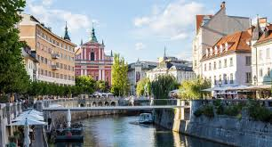

Călătoriile
reprezintă o parte esențială a dezvoltării noastre, a tuturor. Ele promit experiențe de neuitat și de neînlocuit. Încă de la vârste fragede, călătoritul ajută la dezvoltarea personalității.
Omul este o ființă care privește mereu spre orizont, dorindu-și să fie acolo, departe, unde este necunoscutul. Acest site are scopul de a surprinde câteva orașe importante din punct de vedere istoric, cultural și arhitectural, văzute prin ochii unor adolescenți.
Călătoriile sunt una dintre metodele pe care le avem pentru a ne conecta cu lumea, dându-ne seama de diferențele dintre noi și învățând din ele. Absolut nimic nu bate experiența reală de a lăsa natura să te surprindă așa cum nu ți s-a mai întâmplat niciodată înainte, sau încercarea de a purta o conversație cu cineva cu care nu împarți nici măcar engleza, sau momentul când guști un fel de mâncare pe care nici nu ți-l puteai imagina. Călătoriile sunt cea mai bună educație care există.

Călătoria este singurul lucru care se poate cumpăra și care te face mai bogat.